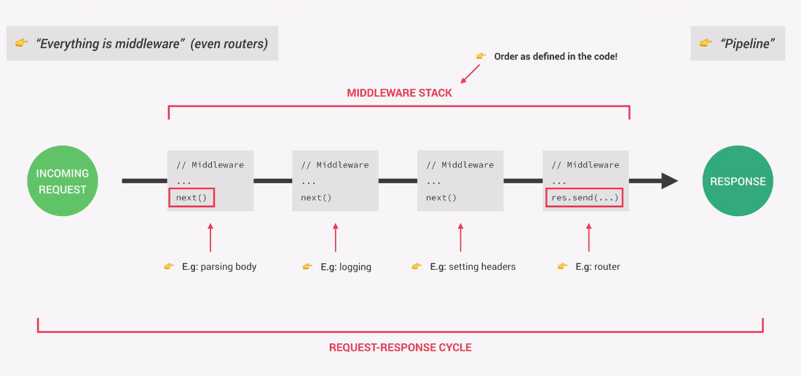

Express is a minimal node.js framework.
Many features included which allows you to write apps much faster.

Express is a minimal node.js framework.
Many features included which allows you to write apps much faster.
Install Express
npm install express
Add to script.
const express = require('express');
Store the Express module in a variable named app.
const app = express();
Use the listen method to start a server.
This method takes in the args:
const express = require('express');
const app = express();
const port = 3000;
// pass in port and callback function
app.listen(port, () => {
console.log('App running');
});
Create a route for the default home URL.
Type app followed by the HTTP method to respond to. In this case, get().
get() takes the args:
Use the response Object to send back data.
You can set the status using the status() method and data to send using the send() method.
const express = require('express');
const app = express();
// Routing
app.get('/', (req, res) => {
res.status(200).send('Hello from the server');
});
const port = 3000;
app.listen(port, () => {
console.log('App running');
});
Open Postman and create a GET request to 127.0.0.1:3000/ to view the result.
Instead of using the send() method, use json() and send back an Object.
const express = require('express');
const app = express();
// Routing
app.get('/', (req, res) => {
res.status(200).json({ message: 'Hello from the server', app: 'Natours' });
});
const port = 3000;
app.listen(port, () => {
console.log('App running');
});
Express app receives a request when someone hits a server for which it will then create a request and response object.
That data will then be used and processed in order to generate and send back a meaningful response.
In order to process that data, in Express we use something called middleware, which can manipulate the request or the response object.
It's called middleware remember because it's a function that is executed between, so in the middle of receiving the request and sending the response.
All the middleware together that we use in our app, is called the middleware Stack.
It's very important to keep in mind that the order of middleware in the stack, is actually defined by the order they are defined in the code. So a middleware that appears first in the code, is executed before one that appears later.
The next() function is available for all middleware functions.
It's called at the end of each middleware function on the exact same request and response object.
The last middleware function is usually a route handler without a next() function.
At that point, the response data is sent back to the client.
This completes the Request-Response cycle.
Static files are usually in the /public subdirectory.
You cannot access these in a browser unless you add middleware.
Add this line to your app.js file.
This specifies which directory to serve static files from.
You can then access the files at http://127.0.0.1:3000/overview.html.
app.use(express.static(`__dir__}/public`));
Node.js and Express apps can run in different environemnts. The most common are.
These different environments allow you to use different databases, or turn logging on or off.
By default, Express sets the environment to development.
Add this code to the server.js file.
console.log(app.get('env'));
Add this code to the server.js file.
This lists lots of Node.js environment variables.
console.log(process.env);
Prepend NODE_ENV to the nodemon command to specify the environment your app should use.
NODE_ENV=development nodemon server.js
Create a file named config.env with the following content.
Use the DotENV extension in VS Code to highlight variables in this file type.
NODE_ENV=development
PORT=3000
USERNAME=jonas
PASSWORD=123456
Install the dotenv package.
npm i dotenv
Add the following lines to the server.js file.
The first requires the module.
The 2nd specifies the file.
NOTE: The require app variable must be after the config.env. This is because the app needs the environment variables to know when to run certain middleware.
const dotenv = require('dotenv');
// specify file
dotenv.config({ path: './config.env' });
const app = require('./app');
This goes in the app.js file.
if (process.env.NODE_ENV === 'development') {
app.use(morgan('dev'));
}
Add these lines to specify which environment to use when you run a certain command to start the app.
"scripts": {
"start:dev": "nodemon server.js",
"start:prod": "NODE_ENV=production nodemon server.js"
},